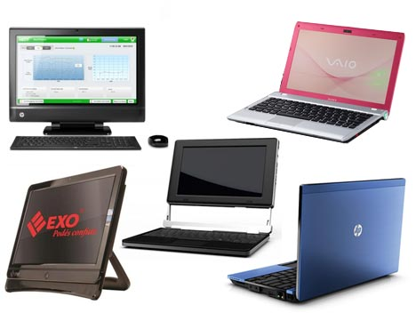
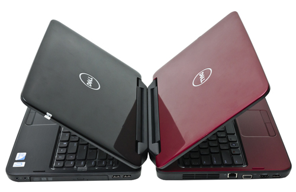

Apple
¿Quién no conoce Apple? Como bien sabéis, Apple, es una empresa estadounidense que diseña equipos electrónicos y sofware principalmente. Tienen una increíble, casi inmejorable reputación, fue creada en 1976 y desde que tuvo una gran polémica con Greenpace, retiró de sus productos el mercurio y desde entonces, fabrica a partir de materiales totalmente reciclados como por ejemplo LCD y aluminio. Llevan el sistema operativo exclusivo de Apple, Mac OS, se caracterizan por su extrema usabilidad, sobre todo si es tu primer portátil Apple, notarás la diferencia con el sistema operativo de Windows. Hasta el momento, Apple no ha fabricado portátiles convertibles, tampoco se espera que en un futuro lo tenga pensado hacer. Estos son algunos de sus portátiles más vendidos: Apple Mac Book Pro, Apple Mac Book Air. Los productos de esta marca son claramente de gama alta, pues los precios de venta oscilan entre 1000-2000 euros. VENTAJAS Ultra-ligeros, Batería de gran autonomía, Excelente usabilidad, Potentes y resistentes, Diseño envidiable. INCONVENIENTES Precio muy elevado, Compatibilidad reducida con productos que no sean de Apple
Dell
 Dell es una compañía multinacional estadounidense, creada en 1983, la cual desarrolla, fabrica, vende y da soporte a ordenadores y servidores. En este caso, nos centraremos en sus portátiles o laptops, y comentaremos algunas de sus características claves. Por un lado, disponen de diferentes categorías de portátiles especializados en diferentes ámbitos y orientados para diferentes consumidores. Algún ejemplo sería, los latitude, notebooks especiales para los negocios, Precision, de alto rendimiento. Todos los portátiles trabajan con el sistema operativo de Windows, algunas de las características que destacan de esta marca, es su alta resolución de pantalla y calidad de imagen, especialmente pensados para ver películas, ya que, incorporan tarjetas gráficas de alta calidad. portatiles más vendidos Dell xps, Dell precision. Por otro lado, su rango de precios es reducido y hace un tiempo comenzaron a desarrollar portátiles convertibles, mercado en auge. Podemos decir que Dell, Se sitúa para un publico de alto poder adquisitivo, donde apuesta por la calidad y el servicio. Dispone de precios elevados entre 800 y 2000 euros. VENTAJAS Aconsejables para trabajar y ver películas, Gran calidad de sus materiales. INCONVENIENTES Precios elevados.